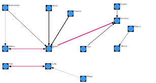

Procesamiento Paralelo.
Temario
4.1 Aspectos Básicos de la computación paralela.
4.2 Tipos de computación paralela.
4.2.1 Clasificación.
4.2.2 Arquitectura de computadores secuenciales.
4.2.3 Organización de direcciones de memoria.
4.3 Sistemas
de memoria (compartida).
Multiprocesadores.
4.3.1 Redes de interconexión dinámica (indirecta).
Medio compartido.
Conmutadas.
4.4 Sistemas de memoria distribuida. Multicomputadores.
4.4.1 Redes de interconexión estáticas.
4.5 Casos para estudio.
4.1 Aspectos Básicos de la computación paralela.
La computación paralela es una forma de cómputo en la que muchas instrucciones se ejecutan simultáneamente, operando sobre el principio de que problemas grandes,
a menudo se pueden dividir en unos más pequeños, que luego son resueltos simultáneamente (en paralelo). Hay varias formas diferentes de computación paralela: paralelismo a nivel de bit, paralelismo a nivel de instrucción, paralelismo de datos y paralelismo
de tareas. El paralelismo se ha empleado durante muchos años, sobre todo en la computación de altas prestaciones, pero el interés en ella ha crecido últimamente debido a las limitaciones físicas que impiden el aumento de la frecuencia. Como el consumo de energía —y por consiguiente la generación de calor— de las computadoras constituye una preocupación en los últimos años,
la computación en paralelo se ha convertido en el paradigma dominante en la arquitectura de computadores, principalmente en forma de procesadores multinúcleo.

4.2 Tipos de computación paralela.
Paralelismo a nivel de bit
Desde el advenimiento de la integración a gran escala (VLSI) como tecnología de fabricación de chips de computadora en la década de 1970 hasta alrededor de 1986, la aceleración en la arquitectura de computadores se lograba en gran medida
duplicando el tamaño de la palabra en la computadora, la cantidad de información que el procesador puede manejar por ciclo.
Paralelismo a nivel de instrucion
Un programa de ordenador es, en esencia, una secuencia de instrucciones ejecutadas por un procesador. Estas instrucciones pueden reordenarse y combinarse en grupos que luego son ejecutadas en paralelo sin cambiar el resultado del programa.
Esto se conoce como paralelismo a nivel de instrucción.
Paralelismo de datos
El paralelismo de datos es el paralelismo inherente en programas con ciclos, que se centra en la distribución de los datos entre los diferentes nodos computacionales que deben tratarse en paralelo. La paralelización de ciclos conduce
a menudo a secuencias similares de operaciones (no necesariamente idénticas) o funciones que se realizan en los elementos de una gran estructura de datos. Muchas de las aplicaciones científicas y de ingeniería muestran paralelismo de datos.
Paralelismo de tareas
El paralelismo de tareas es la característica de un programa paralelo en la que cálculos completamente diferentes se pueden realizar en cualquier conjunto igual o diferente de datos. Esto contrasta con el paralelismo de datos, donde se
realiza el mismo cálculo en distintos o mismos grupos de datos. El paralelismo de tareas por lo general no escala con el tamaño de un problema.
 4.2.1 Clasificación.
4.2.1 Clasificación.
Las computadoras paralelas pueden clasificarse según el nivel de paralelismo que admite su hardware: equipos con procesadores multinúcleoy multi-procesador que tienen múltiples elementos de procesamiento dentro de una sola máquina y los clústeres, MPPS y grids que utilizan varios equipos para trabajar en la misma tarea. Muchas veces, para acelerar tareas específicas, se utilizan arquitecturas especializadas de computación en paralelo junto a procesadores tradicionales.
4.2.2 Arquitectura de computadores secuenciales.
Dentro de esta clasificación, se encuentra a las computadoras SISD (Single-Instruction Stream, Single-Data, Stream/ Flujo único de instrucciones, flujo único de datos)
Las computadoras secuenciales se basan en el modelo introducido por John Von Neumann la cual consiste en:
- Una Unidad Central de Procesamiento (CPU).
- Memoria Principal para almacenar información.
- Bus donde fluyan los datos.
- Mecanismo de sincronización.
En estos sistemas, los valores de las salidas, en un momento dado, no dependen exclusivamente de los valores de las entradas en dicho momento, sino también de los valores anteriores. El sistema más simple que existe se denomina Biestable
4.2.3 Organización de direcciones de memoria.
La memoria de acceso secuencial son memorias en la cuales para acceder a un registro en particular se tienen que leer registro por registro desde el inicio hasta alcanzar el registro particular que contiene el dato que se requiere. Estas memorias se clasifican en:
- Registros de desplazamiento
- Dispositivos por acoplamiento por carga
- Memorias de burbuja

4.3 Sistemas de memoria (compartida).
Multiprocesadores.
Un multiprocesador puede verse como un computador paralelo compuesto por varios procesadores interconectados que comparten un mismo sistema de memoria.
Los sistemas multiprocesadores son arquitecturas MIMD con memoria compartida. Tienen un único espacio de direcciones para todos los procesadores y los mecanismos de comunicación se basan en el paso de mensajes desde el punto de vista del programador.
Dado que los multiprocesadores comparten diferentes módulos de memoria, pudiendo acceder a un mismo módulo varios procesadores, a los multiprocesadores también se les llama sistemas de memoria compartida.
 4.3.1 Redes de interconexión dinámica (indirecta).
Medio compartido.Conmutadas.
4.3.1 Redes de interconexión dinámica (indirecta).
Medio compartido.Conmutadas.
Uno de los criterios más importantes para la clasificación de las redes es el que tiene en cuenta la situación de la red en la máquina paralela, dando lugar a dos familias de redes: redes estáticas y redes dinámicas. Una red estática es una red cuya topología queda definida de manera definitiva y estable durante la construcción de la máquina paralela.
La red simplemente une los diversos elementos de acuerdo a una configuración dada. Se utiliza sobre todo en el caso de los multicomputadores para conectar los diversos procesadores que posee la máquina. Por la red sólo circulan los mensajes entre procesadores, por lo que se dice que la red presenta un acoplamiento débil. En general, en las redes estáticas se exige poca carga a la red.
Una red dinámica es una red cuya topología puede variar durante el curso de la ejecución de un programa paralelo o entre dos ejecuciones de programas. La red está constituida por elementos materiales específicos, llamados commutadores o switches.
Las redes dinámicas se utilizan sobre todo en los multiprocesadores. En este caso, la red une los procesadores a los bancos de memoria central. Cualquier acceso de un procesador a la memoria (bien sea para acceder a los datos o a las instrucciones) debe pasar a través de la red, por lo se dice que la red tiene un acoplamiento fuerte. La red debe poseer un rendimiento extremadamente bueno para no demorar demasiado a los procesadores que acceden a memoria.

4.4 Sistemas de memoria distribuida.
Multicomputadores.
Los sistemas de memoria distribuida o multicomputadores pueden ser de dos tipos básicos. El primer de ellos consta de un único computador con múltiples CPUs comunicadas por un bus de datos mientras que en el segundo se utilizan múltiples computadores, cada uno con su propio procesador, enlazados por una red de interconexión más o menos rápida.
Sobre los sistemas de multicomputadores de memoria distribuida, se simula memorias compartidas. Se usan los mecanismos de comunicación y sincronización de sistemas multiprocesadores.
Un clúster es un tipo de arquitectura paralela distribuida que consiste de un conjunto de computadores independientes interconectados operando de forma conjunta como único recurso computacional sin embargo, cada computador puede utilizarse de forma independiente o separada.
4.4.1 Redes de interconexión estáticas
Uno de los criterios más importantes para la clasificación de las redes es el que tiene en cuenta la situación de la red en la máquina paralela, dando lugar a dos familias de redes: redes estáticas y redes dinámicas. Una red estática es una red cuya topología queda definida de manera definitiva y estable durante la construcción de la máquina paralela.
La red simplemente une los diversos elementos de acuerdo a una configuración dada. Se utiliza sobre todo en el caso de los multicomputadores para conectar los diversos procesadores que posee la máquina. Por la red sólo circulan los mensajes entre procesadores, por lo que se dice que la red presenta un acoplamiento débil. En general, en las redes estáticas se exige poca carga a la red.
Una red dinámica es una red cuya topología puede variar durante el curso de la ejecución de un programa paralelo o entre dos ejecuciones de programas. La red está constituida por elementos materiales específicos, llamados commutadores o switches.
Las redes dinámicas se utilizan sobre todo en los multiprocesadores. En este caso, la red une los procesadores a los bancos de memoria central. Cualquier acceso de un procesador a la memoria (bien sea para acceder a los datos o a las instrucciones) debe pasar a través de la red, por lo se dice que la red tiene un acoplamiento fuerte. La red debe poseer un rendimiento extremadamente bueno para no demorar demasiado a los procesadores que acceden a memoria.

4.5 Casos para estudio.
Por numerosos motivos, el procesamiento distribuido se ha convertido en un área de gran importancia e interés dentro de la Ciencia de la Computación, produciendo profundas transformaciones en las líneas de I/D.
Interesa realizar investigación en la especificación, transformación, optimización y evaluación de algoritmos distribuidos y paralelos. Esto incluye el diseño y desarrollo de sistemas paralelos, la transformación de algoritmos secuenciales
en paralelos, y las métricas de evaluación de performance sobre distintas plataformas de soporte (hardware y software). Más allá de las mejoras constantes en las arquitecturas físicas de soporte, uno de los mayores desafíos se centra en cómo
aprovechar al máximo la potencia de estas.
Interesa realizar investigación en la especificación, transformación, optimización y evaluación de algoritmos distribuidos y paralelos. Esto incluye el diseño y desarrollo de sistemas paralelos, la transformación de algoritmos secuenciales
en paralelos, y las métricas de evaluación de performance sobre distintas plataformas de soporte (hardware y software). Más allá de las mejoras constantes en las arquitecturas físicas de soporte, uno de los mayores desafíos se centra en cómo
aprovechar al máximo la potencia de estas.
Líneas De Investigación Y Desarrollo:
- Paralelización de algoritmos secuenciales. Diseño y optimización de algoritmos.
- Modelos de representación y predicción de performance de algoritmos paralelos.
- Mapping y scheduling de aplicaciones paralelas sobre distintas arquitecturas multiprocesador.
- Métricas del paralelismo. Speedup, eficiencia, rendimiento, granularidad, superlinealidad.
- Balance de carga estático y dinámico. Técnicas de balanceo de carga.
- Análisis de los problemas de migración y asignación óptima de procesos y datos a procesadores. Migración dinámica.
- Escalabilidad de algoritmos paralelos en arquitecturas multiprocesador distribuidas.
- Implementación de soluciones sobre diferentes modelos de arquitectura homogéneas y heterogéneas (multicores, clusters, multiclusters y grid). Ajuste del modelo de software al modelo de hardware, a fin de optimizar el sistema paralelo.
- Evaluación de performance.
- Laboratorios remotos para el acceso transparente a recursos de cómputo paralelo.